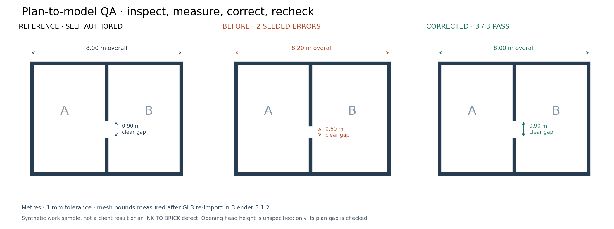

itsallsame · work sample · October 15, 2026
I authored a small reference plan, built a deliberately inconsistent Blender model, recorded the differences, corrected them, then exported and re-imported both revisions to verify the dimensions. All geometry, reference data, annotations and checks in this example are my own work.
This is a synthetic exercise, not a past client project or a finding about INK TO BRICK.

| Location / issue | Expected | Before | Corrected GLB |
|---|---|---|---|
| Outer east boundary / overall width | 8.00 m | 8.20 m · fail | 8.00 m · pass |
| Partition opening, y=2.00 m / clear plan gap | 0.90 m | 0.60 m · fail | 0.90 m · pass |
| Overall north–south depth | 6.00 m | 6.00 m · pass | 6.00 m · pass |
blender --background --python build_and_check.py with the source script and source-spec.json beside it. It writes both revisions, exports GLB, re-imports each into a clean Blender scene, and writes the measured report.The checks use world-space mesh bounds, with a tolerance of 0.001 m. The before model fails width and opening-gap checks; the corrected GLB passes all three. Each GLB round trip preserves these three dimensions within the same tolerance. This demonstrates Blender-to-GLB-to-Blender checks, not interoperability across multiple independent tools.
The plan does not specify the opening head height, so this model leaves an unbounded vertical gap and checks only the plan gap. No lintel, door swing, stairs, multi-floor connectivity, BIM semantics, building-code compliance, structural design or real site measurements are evaluated. No INK TO BRICK editor behavior has been tested.
Raw results · Reproduction source · Annotation source · Reference data